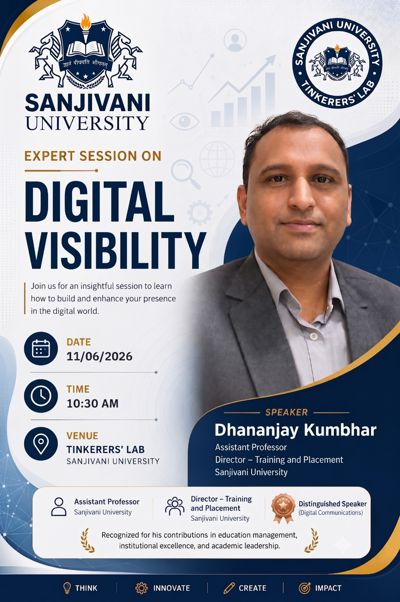

By Dhananjay Kumbhar Sir, Assistant Professor and Director of Training and Placement, Sanjivani University

An expert session on Digital Visibility was conducted by Mr. Dhananjay Kumbhar Sir, Assistant Professor and Director of Training and Placement at Sanjivani University. The session focused on the importance of building a strong professional presence in the digital world and how students can use online platforms effectively to improve their career opportunities. Through various real-life examples and practical insights, the speaker explained how a well-maintained digital profile can help students connect with industry professionals, attract recruiters, and secure better job opportunities.
Digital visibility refers to how easily a person can be found, recognized, and evaluated on online platforms. In today's competitive job market, recruiters often review a candidate's online presence before offering interviews or employment opportunities.
A strong digital presence helps individuals:
The session emphasized that students should treat their digital profiles as their online resume and professional identity.
One of the major topics discussed during the session was the importance of LinkedIn as a professional networking platform.
The speaker encouraged students to regularly update their LinkedIn profiles with:
A complete and professional LinkedIn profile increases visibility among recruiters and hiring managers.
A key takeaway from the session was the importance of creating quality professional connections rather than simply increasing the number of connections.
Students were advised to connect with:
The speaker emphasized that connecting with people who can provide career guidance, referrals, mentorship, or placement opportunities is more beneficial than making unnecessary connections without professional value.
The session highlighted that every online activity contributes to a person's digital reputation.
A strong personal brand helps students stand out among thousands of candidates applying for similar positions.
Digital accounts are no longer used only for social interaction; they have become important career development tools.
Students were encouraged to regularly maintain and update their online profiles to ensure that their achievements and skills are visible to potential employers.
The speaker explained that a strong digital presence can significantly reduce the time spent in recruitment processes.
When recruiters can easily view:
they gain confidence in a candidate's abilities even before the interview stage.
As a result:
This demonstrates how digital visibility can help students gain a competitive advantage in the job market.
The session included several daily-life examples to demonstrate how digital visibility impacts professional growth. The speaker showed how individuals with strong online profiles often receive better networking opportunities, career guidance, and job referrals compared to those who remain inactive on professional platforms.
The examples helped students understand that maintaining a professional digital identity is now an essential part of career development rather than an optional activity.
The Digital Visibility session by Mr. Dhananjay Kumbhar Sir provided valuable insights into the importance of building a professional online presence in today's digital era. The session emphasized that platforms such as LinkedIn are powerful tools for networking, career growth, and job opportunities. Students learned that meaningful professional connections, a strong personal brand, and an active digital presence can significantly enhance their employability. The session encouraged students to use their digital accounts strategically to showcase their skills, connect with the right people, and create better placement and career opportunities while reducing the challenges associated with traditional job search processes.